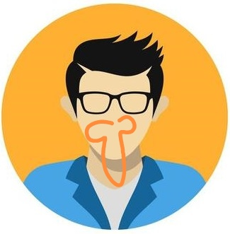

someone@email.com
mobile: +852 xxxxxxxx
Nationality: Chinese
# Info
## Key Qualifications
- **Collaboration:** Working with diverse teams and stakeholders to achieve common goals
- **Adaptability:** Embrace change and quickly adjust strategies to meet evolving needs
- **Continuous learning:** Seeking out new knowledge and skills to stay current and relevant
- **Communication:** Demonstrated ability to communicate complex information clearly and concisely, ensuring understanding among diverse stakeholders.
## Erhverserfaring
### Artelia Denmark, Buddinge (09.2015 – nuværende)
#### Livsvitenskapsbygget (2018-present):
- 2022-present: Project manager – Construction / Client consultant – Construction
- 2018-2022: Structural Computational Engineer
**Key tasks:**
- Collaborated with various stakeholders, including contractors, architects, and technical teams, to collect and analyze relevant data for informed decision-making.
- Contributed to the implementation of advanced data-driven solutions to meet the building requirements and enhance the overall functionality of the project.
- Be part of, and implementing, the project's adaptive and progressive LEAN process.
#### Hannemanns Alle
####
**LCA Analysis (2022-present):**
- **Project roles:**
## Secondary Work Experience
- **MOE AS, Buddinge / Student intern (03.2014 – 09.2015)**
- **DTU, Lyngby / Student assistant Marine Structures (02.2015 – 06.2015)**
- **HiO, Oslo / Student assistant Autodesk Revit (01.2013 – 06.2013)**
- **Tronrud Bygg / Student intern (11.2012 – 05.2013)**
- **Det Norske Forsvaret, Oslo - Grenader / Editor (07.2009 – 12.2009)**
- **Kiwi / RIMI – Store employee (12.2001 – 08.2012)**
# Education
- **DTU, København (08.2013 – 07.2015):** MSc Civil Works and Marine Structures
- **HiO, Oslo (08.2010 – 06.2013):** Bygineiør
- **HiO, Oslo (08.2009 – 06.2010):** Journalistik
- **HiST, Trondheim (08.2007 – 06.2008):** Forberedende Ingeniørfag
- **Skjeberg Højskole (08.2006 – 06.2007):** Fotolinje
# Publications
- **June 2015:** *New Harbor in Western Greenland. Field investigations and utilization of existing materials*
- Feltarbejde med geotekniske undersøgelser, 3 uger i Grønland
- Belægningsdimensionering ved brug af eksisterende materialer
- Artiklen bliver udgivet ved POAC-konferensen i Trondheim
- Udbytte: Optimering af materialer / Planlægning af feltarbejd / Udfordrende logistikproblematik.
# Voluntary Work
- **2014-2015:** Styremedlem i foreningen Tekna København
- **2011-2013:** NITO-studentene ved HiOA – Næstformand / Formand
- **2012:** Læringsmiljøudvalget ved HiO
- **2011-2012:** Ingeniører Uden Grænser (IUG) (Lokallag HiO) – Bestyrelsesmedlem
- **2011-2012:** Studentermagasinet ERGO – Editor
# Aftjent værnepligt
- **07.2008 – 07.2009:** Søværnet, førstegangstjeneste
- Værnepligtstid i Oslo som journalist
# Fritid
- Foto og digitalt design.
- Klatring, friluftsliv, og løb.
# Referencer
Har gode referencer som opgives ved forespørgsel